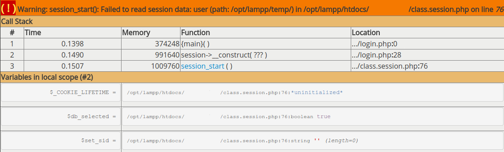

其實這問題碰到一陣子了，從我還不會用 xdebug 就碰到了，
用 xdebug 前的情況是我進後台的登入頁
打完帳號密碼點登入完全沒反應，只會繼續跳轉回登入頁
沒有彈出任何錯息
用了 xdebug 後就乖乖的彈出警告訊息啦

警告訊息
警告
Warning: session_start(): Failed to read session data: user
再根據錯誤訊息來 google 很快就找到解法了
是因為 SessionHandler 的 read 找不到值沒有回傳 null 導致的問題
所以要在回傳前加上個判斷
原本是直接回傳
1
2
3
4
5
6
7
8
9
10
11
12
13
14
15
|
<?php
/**
* read
*/
function _read($session_id) {
$sql = "SELECT sessdata FROM sessions
WHERE sesskey = '" . $session_id . "'
AND expiry > '" . date("Y-m-d H:i:s", time() ) . "'
LIMIT 1";
$irs = mysqli_query($this->_link, $sql);
$fields = mysqli_fetch_assoc($irs);
return $fields['sessdata'];
}
?>
|
回傳前加上判斷
1
2
3
4
5
6
7
8
9
10
11
12
13
|
<?php
/**
* read
*/
function _read($session_id) {
$sql = "SELECT sessdata FROM sessions
WHERE sesskey = '" . $session_id . "'
AND expiry > '" . date("Y-m-d H:i:s", time() ) . "'
LIMIT 1";
$irs = mysqli_query($this->_link, $sql);
return empty($fields = mysqli_fetch_assoc($irs)) ? null : $fields['sessdata'];
}
?>
|
references :